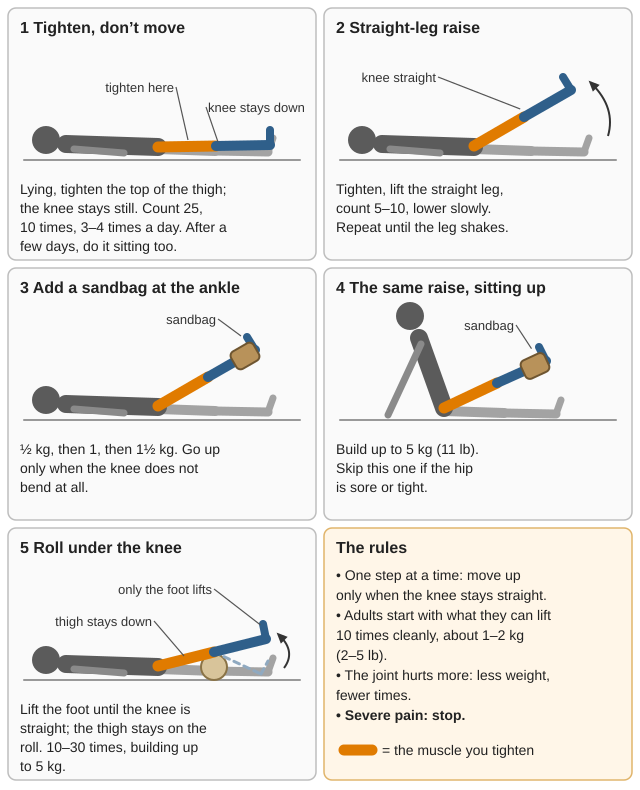
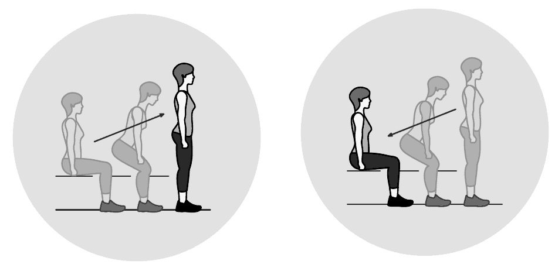
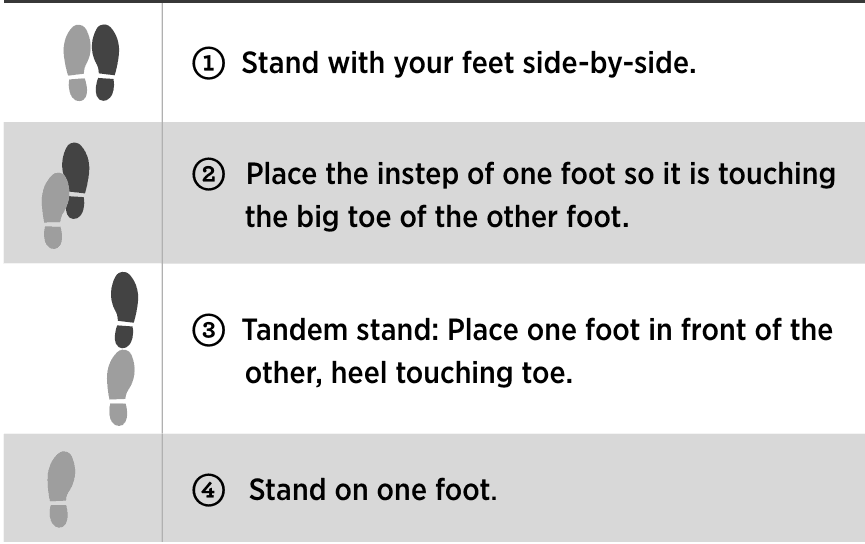
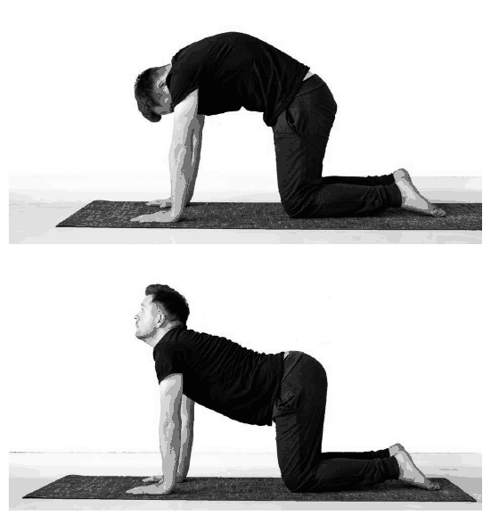
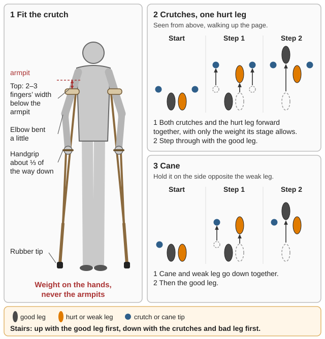
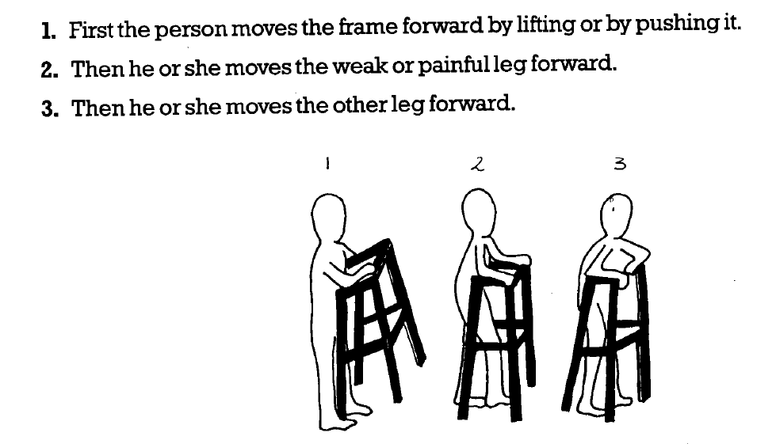

How to get a hurt, sick or bed-bound person moving, strong and working again with no physical therapist, X-ray or surgeon: when to start, how much and how often, exercises joint by joint, strength and balance, common injuries, long bed rest, burns, head injuries, home-made crutches, and the road back to firewood and water hauling. This guide is not a clinician. It names the danger signs, where a clinic would normally be essential, and the safest course without one. First aid is in the Field Care guide; medicines and doses in the Medical READ-ME-FIRST. The rehab books are in Medical\Rehab-Physical-Therapy, with Hesperian's Disabled Village Children chapters ("DVC") in its Disabled-Village-Children folder; the WHO 1989 family packages there are scanned pictures that search can't read. WHO Surgical Care at the District Hospital and ICRC War Surgery are in Medical\Field-Care\Wounds-Burns-Fractures, the JTS nursing guideline and Navy Hospital Corpsman in Medical\Field-Care\Nursing-Care. Page numbers are PDF pages.
The short version
Know the red flags (table below) and stop when you see one: spreading redness or fever, numbness or weakness getting worse, a joint that keeps giving way, night pain, back pain with fever, and one calf swollen, hot and painful: a clot. Never rub or massage it (A Book for Midwives, p. 6).
Protect, then move early. Move every joint that isn't hurt from day 1: "Immobilized extremities quickly lose their functional abilities" (WHO Surgical Care, p. 398).
Pain is the guide. Stretching "should not be very painful" (DVC ch. 42, p. 8); pain that is worse and still there the next day means too much (VA/DoD, p. 4).
Where a clinic would normally be essential, and what to do without one: a clot needs blood thinners, so prevent it (see "After long bed rest").
Surgical injuries: a leg that can't be straightened after a blow to the kneecap (torn tendon), a cold, pale foot after a knee injury (torn artery) (WHO, p. 420), a joint that stays floppy, a broken scaphoid. Without surgery: the longest safe splinting, crutches, slow strengthening, and honest talk that some stiffness or weakness may last.
Stroke, spinal cord injury, bad burns: families can do most of the rehab (sections below). Old, severe stiff joints: a tight joint capsule "often requires surgery" (DVC ch. 08, p. 4); a series of casts can win some motion back (see Burns).
How healing goes, and when to start moving
Protect, then move. A limb kept still loses strength and bone; moving early "helps to prevent venous thrombosis and pressure sores" (WHO, p. 398). With no therapist the family takes over, and "it is the motivation of the patient that will determine the outcome"; "Begin motion and strengthening of uninjured extremities as soon as possible" (p. 399).
When to move the hurt part, the books differ: the Air Force manual waits 4–6 weeks for a severe joint injury (AFH 10-644, p. 64), DVC "usually 4 to 6 weeks" for broken bones (DVC ch. 42, p. 8), and WHO gives a schedule for each injury. This guide follows WHO when you know the injury, and waits 4–6 weeks when you can't tell.
Swelling: raise it, cool it, wrap it, then warm it
Raise it 24–48 hours and "wiggle your fingers or toes frequently" (WHO, p. 392); a hurt hand stays raised the first week (p. 413). Wrap from the toes or fingers upward and loosen it every hour or two (WTND, p. 28).
Cold: the books range from 10 to 30 minutes for one to three days (WTND; AFH, p. 63; 105-Page Manual, p. 48). This guide: wrapped cold 15–20 minutes every 1–2 hours while awake, for about 2 days; off when the skin goes numb (AFH), never nonstop (105-Page). A rag in cold creek water works (AFH, p. 58).
Heat once the swelling stops growing, 24 hours after the last cold pack (Hospital Corpsman, p. 196); "cold works better on hot, inflamed joints and heat on sore, stiff joints". Hot compress: a thick cloth wrung out of water you can "hold your hand in … comfortably", covered with thin plastic and a towel (DVC ch. 15, p. 4). Hot water bottles "must never exceed 125°F (51°C)" (Hospital Corpsman, p. 99).
Pain and progress rules
OK: "no more than minimal discomfort" (AFH, p. 65). Stop: "DO NOT PUSH THROUGH SEVERE PAIN" (Ship's, p. 67). Next day: discomfort that "increases and remains the following day" means cut back (VA/DoD, p. 4).
An activity brings more pain: stop it a few days, then try again; if it still hurts more, stop it. Some swelling after activity is OK unless it keeps growing (WHO 1989, package 15, p. 176). A sore joint: "use less weight and repeat fewer times" (DVC ch. 16, p. 8).
Step up slowly: about 10% a week (Ship's, p. 139); too fast "may aggravate the injury", too slow "risks general deconditioning"; keep a written log (FM 7-22, p. 96). The VA plan: 10–20 minutes every other day; after a week with no more pain, add 5 minutes every other day, toward 30 minutes three times a week (VA/DoD, p. 6).
The ladder for any joint: a helper moves it → you move it with help → alone → against a weight → in daily work (DVC ch. 08, p. 7). Before running or heavy work on a leg, walk 30 minutes without symptoms getting worse (FM 7-22, p. 158).
Range-of-motion exercises
Range of motion (ROM) means moving a joint as far as it normally goes in every direction. It prevents contractures, joints that no longer straighten because muscle and skin have shortened (DVC ch. 08, p. 1). Passive: a helper moves it. Assisted: the person moves it as far as they can and the helper does the rest. Active: the person does it all, which "is usually best, because it also helps maintain or increase strength" (DVC ch. 42, p. 7; WHO, p. 399).
Who
Dose
Source
Anyone in bed
All movable joints, 5–10 times each, at least every 8 hours
Heat a stiff or painful joint 10–15 minutes first. Hold just above and below the joint; never pull far from it (pulling the foot to straighten a knee "can dislocate the knee (or break the bone)").
Move slowly: moving it fast "like the handle of a pump … does no good and can do harm". At the stiff end, hold while you count to 25, stretch a little more, hold again. For faster results "Do not apply more force. Stretch the limb for longer and more times each day" (DVC ch. 08, p. 8).
Don't move a broken part until it has joined; don't stretch a joint that is already floppy; take extra care if the person can't feel the limb or can't tell you it hurts.
Joint
Movements
Picture
Shoulder
Forward and up; out to the side; back; across the chest; with the elbow bent, turn the arm up and down
Tight muscle or tight joint? Test the knee with the hip straight, then bent (the ankle with the knee straight, then bent). If it moves more one way, a muscle is tight, which "can often be corrected in the village"; the same either way means the joint capsule, which "often requires surgery" (DVC ch. 08, p. 4). "If a joint has been bent for a long time, be gentle. Do not try to force it straight" (WWHND ch. 9, p. 6). Stretch sheets for a tight heel cord, bent knee and bent hip: DVC ch. 42, pp. 17–19.
📚 Go deeper:DVC ch. 42 — precautions, games that exercise, nine home exercise sheets; DVC ch. 08 — how contractures form and how to measure them.
Getting strong again
Start with exercises without motion (isometric: tightening a muscle without moving the joint), "useful across injured joints" (WHO, p. 400). Then climb the best ladder in the library, for the thigh and knee (DVC ch. 16, pp. 6–8):
Step
Exercise
Dose
Move up when
1
Lying down, tighten the thigh without moving the knee
Lying, a rolled blanket under the knee, lift the foot
10–30 times, building to 5 kg
Steady and painless
6
Chair rise; step-ups, "Start with low steps"; hills
Below
Ready for work

Steps 1–5 of the ladder: move up only when the knee stays straight (a diagram drawn for this guide).
Weights: DVC's are for children. An adult starts at what they can lift 10 times cleanly, about 1–2 kg (2–5 lb), adding ½–1 kg a week (rule of thumb). For healthy adults Ship's starts women at 2–3 lb and men at 5–10 lb, "two sets of 8-12 repetitions" twice a week (Ship's, p. 138); the Army uses "1-3 sets of 10 repetitions" (FM 7-22, p. 98). Use a "cloth bag filled with sand", or bands cut from an old inner tube: "The wider the band, the more resistance" (DVC ch. 42, p. 7). Weigh a sandbag by balancing it on a stick against a measured liter of water (1 kg, 2.2 lb) (arithmetic). For the hand: a strip of tire between two sticks to squeeze; milking goats, wringing laundry and punching leather all count (DVC ch. 42, p. 26).
Chair rise (CDC STEADI, p. 1): at the front of a sturdy chair, feet flat, hands resting lightly on the seat, lean forward, breathe out and "slowly stand up, using your hands as little as possible"; pause; sit down slowly, "Do not let yourself collapse". 10–15 times, rest a minute, 10–15 more; start with fewer if needed. The goal is no hands.

Lean forward and stand, using your hands as little as possible; sit back down slowly, without collapsing (CDC STEADI, p. 1).
Other building blocks:
Side of the hip (a limp that leans to one side): lie on your side, lift the leg and hold it until it drops; 3 times, 3 times a day (DVC ch. 42, p. 24). The Army lifts the foot 6–8 inches, "no more than 10 repetitions" (FM 7-22, p. 104).
Arms for crutches: sitting, push yourself up off the seat, 3 or 4 times a day, building to 50 times (DVC ch. 42, p. 22); modified push-ups, hips and legs on the mat (TM 8-292, p. 116).
Strengthen the weak side, not the strong one, or the joint is pulled into a contracture (DVC ch. 42, p. 10). Hold stretches 20–30 seconds; "Don't bounce" (Ship's, p. 139; FM 7-22, p. 97).
Balance and walking again
The 4-stage balance ladder (CDC STEADI 4-Stage, pp. 1–2): with a helper or a counter beside you, hold each for 10 seconds without moving your feet: 1 feet side by side; 2 the instep of one foot against the big toe of the other; 3 heel to toe in a line; 4 one foot. An older adult who can't hold stage 3 for 10 seconds "is at increased risk of falling"; CDC names Tai Chi for fall prevention. To train, practice the hardest stage you can hold a few times a day, up to 30 seconds, then with eyes closed, then on a folded blanket (rule of thumb). Lift one leg, then the other; later walk "on a log or narrow board" (DVC ch. 42, p. 3). In bars: walk sideways and backward, stand on one leg holding on with the opposite hand, then use one bar (WHO 1989, package 13, p. 122).

The four stages, each harder than the last: hold each for 10 seconds without moving your feet (CDC STEADI 4-Stage, p. 2).
After an ankle or knee injury(rule of thumb; the library has no ankle plan): one-leg stands on the hurt side, 30 seconds, 3–5 times a day; then eyes closed; then on a blanket; then small hops in place and side to side, before running or rough trail. Walk to run (FM 7-22, p. 157): every other day, at least a week at each level, 5 minutes' walk before and after.
Week
Walk
Jog
Repeat
Total
I
4 min
2 min
5 times
30 min
II
3 min
3 min
5 times
30 min
III
2 min
4 min
5 times
30 min
IV
1 min
5 min
5 times
30 min
V
Run every other day from 15 minutes, up to 30 over 2–4 weeks
Common injuries
First aid is in Field Care, "Broken bones, sprains, spine and head". Thin spots are marked (rule of thumb).
Ankle sprain
Days 1–2: raise, cool, wrap; "Use crutches to give a sprained foot as much rest as possible" (WTND, p. 28). Trace circles and the alphabet with the toes (JTS, p. 13; written for clots, a classic early ankle exercise (rule of thumb)).
No better after 48 hours, or "very loose or floppy": more than a sprain; "Surgery may be needed" (WTND). A broken outer ankle bone gets a splint, then a walking cast after 7–10 days (WHO, p. 424).
Week 1 on, then weeks 2–3(rule-of-thumb timing): walk with as much weight as is comfortable, stretch the calf leaning on a wall (DVC ch. 08, p. 7), heel raises; then the balance steps above, with an elastic wrap or ankle brace while it's weak (DVC ch. 15, p. 3).
Last: jumping and running "with the most caution", shorter, shallower lunges (FM 7-22, p. 159). A loose ankle can stay weak "for months or years" (DVC ch. 15): lace boots firmly on rough trail (rule of thumb).
Knee
Strength: the ladder above. Stiff knee: stretch sheet 2, count 25, several times, 3 times a day; never by pulling on the foot (DVC ch. 42, p. 18). Overuse pain follows "an abrupt increase" in miles or hills: strengthen thigh, hamstrings and trunk, stretch the calf (ATP 3-21.18, p. 132).
Kneecap slipped out: straighten the knee and push the kneecap toward the middle. Can't straighten the leg after a blow: a torn tendon or broken kneecap needing surgery (WHO, p. 420). A kneecap crack that hasn't moved: splint or cast 4–6 weeks, full weight allowed. Top of the shin broken: motion at 1–2 weeks, no weight 6 weeks, then crutches or a stick 6 more (p. 421).
Back to work: lunges and squats "with a reduced range of motion and fewer repetitions" first (FM 7-22, p. 158).
Low back
This guide follows the VA/DoD (2022), not the older "rest flat on your back for a few days" (WTND, p. 24). "Remaining active is key"; most people improve "within the first month" (VA/DoD, p. 3); "If possible, continue to work and make simple changes in how you do your job" (p. 2). Rest a day or two only "if rest is necessary". Moist heat 15–20 minutes, two or three times a day, not if you hurt it in a fall; no bouncing or jerking (p. 4).
On your back, knees bent; tighten belly and buttocks, press the low back down, then arch
Hold 5 s each way, 5 times
Cat/camel
On hands and knees, round the back up, then let it sag
Hold each for a count of 15; 30 s–2 min
Backward stretch
Stand, hands on the low back, lean back gently
Hold 5; 3 or 4 times
Knee to chest
On your back, pull one knee to the chest
Hold 10; 10 times each leg

Cat/camel: round the back up and hold for a count of 15, then let it sag and hold (VA/DoD, p. 5).
WWHND adds the knee hug, the twist and the pelvic tilt every day; "Stop if any of these exercises cause pain" (WWHND ch. 26, pp. 8–9). Walk on the VA plan (Pain and progress rules).
Daily life: roll onto your side and push up with your arms to get out of bed; sleep with a pillow under or between the knees (VA/DoD, p. 7); sit with knees at 90° and a rolled towel at the low back (p. 9), not one way for long (WHO 1989, p. 177).
Back to work: lunges and squats are "generally well tolerated, because the trunk remains straight" (FM 7-22, p. 161). Sudden pain lifting or twisting with pain or numbness down one leg may be "a slipped disc" (WTND, p. 23); other red flags are in the table at the top.
Neck
The person moves it, slowly, many times, without force: turn, tilt, nod. Forcing a stiff neck can make the bones slip and cause "total paralysis or even death", above all with arthritis, Down syndrome or a neck injury (DVC ch. 42, p. 10). Shoulders: up and down, roll forward and back, pull the blades together, 2 or 3 times whenever stiff (WWHND ch. 26, p. 13).
Loads: no head straps (p. 8); numb arms under a pack mean a hip belt and frame (ATP 3-21.18, p. 133). Whiplash or a strained neck: the library has no plan; keep it moving gently within comfort, use heat, and treat new arm numbness or weakness as a red flag (rule of thumb).
Shoulder
Hanging-arm exercise (WHO's "motion with gravity"): lean forward and let the arm hang, moving it gently with the joint unweighted; it "works well for shoulder injuries" (WHO, p. 400; p. 402). Collarbone: sling until pain-free (4–6 weeks adults, 3–4 children), hanging-arm exercise within days (p. 402). Separated shoulder: off the sling daily to straighten the elbow, strengthening "by the second week" (p. 403).
After a dislocation, the books differ: bind it a week to a month, no lifting for a month (WTND, in Field Care); splints off at 7–14 days (FM 3-05.70, p. 51); strengthening "at 6 weeks, with an emphasis on internal rotation" (WHO, p. 404). This guide: sling 1–3 weeks with hanging-arm exercise from the first days, no lifting or overhead work for 6 weeks, then strengthen (rule of thumb where it goes past the books). It comes out again easily, "especially in younger patients" (p. 403).
Upper arm break: hanging-arm exercise as soon as tolerated, weights once healed at 6–8 weeks (p. 405); "The major complication is shoulder stiffness" (p. 404). A dropped wrist after it usually recovers: splint it bent back and begin "passive extension exercise" (p. 405).
Strength: lying face down, raise both straight arms 3–6 inches in the shapes I, T, Y, L and W, 5 slow repetitions each (FM 7-22, pp. 113–115); push-ups "may start from the knees" (p. 162).
Stiff or "frozen" shoulder: a rope over a branch, a handle at each end; the good arm pulls the stiff arm straight up, 10 times (WHO 1989, package 16, p. 193). That is all the library has. It usually stiffens over months and loosens over a year or more; keep up the rope, hanging-arm exercise and walking the fingers up a wall daily, to mild discomfort (rule of thumb). Pain raising the arm out or forward can be impingement (WHO, p. 449).
Elbow, wrist, hand and fingers
Elbow put back in: move it after 10 days, splint off at 4–6 weeks (WHO, p. 409). Forearm break: the risk is losing the turn of the palm; out of the cast at 6–8 weeks (p. 410). A "sprained" wrist tender in the hollow at the base of the thumb (snuffbox) is a broken scaphoid until proved otherwise: "often overlooked", 6–20 weeks in a thumb splint (pp. 411–412).
Hand: splint with the wrist back about 20°, knuckles bent to a right angle, finger joints straight; raise it the first week; "Begin active exercises as soon as possible" (p. 413). Fingers: tape a hurt finger to its neighbor; fingers that cross in a fist mean a twisted hand bone; a drooping fingertip (mallet finger) is splinted straight continuously 6–8 weeks (p. 414).
The hand program, 10–20 times each, at least twice a day, once bones have healed: close and spread the fingers; fist and open; "O"s with the thumb and each finger, large then small; wrist forward and backward ("especially important"); thumb out and in; wrist side to side; palm up and down (DVC ch. 42, p. 25).
After a splint or cast comes off
Plaster: soak it "in water, or water with vinegar added, for 10–15 minutes and then remove it like a bandage" (WHO, p. 393).
Expect stiffness and thin muscles. Warm it, then move it with the other hand through a range "which can be tolerated without pain", then on its own, then against weight (AFH, p. 65).
An arm: no force for another month (WTND, p. 24). A leg goes back to weight in steps (WHO, p. 400): non-weight bearing (held off the ground) → touch down (the limb's own weight only) → partial (some weight, the rest on crutches) → full (the aid only "for balance and in case of emergency"). Foot stress fractures: limit time on your feet (p. 426).
Hip
An old person, a simple fall, a leg short and turned out: a broken hip. Without surgery: if it hasn't moved, light traction and gentle motion until healed, 8–12 weeks; if it has, traction a few weeks, "then begin sitting and walking with crutches"; sitting up prevents "pressure sores and pneumonia" (WHO, p. 417). Hip put back in: crutches, "weight bearing after 12 weeks" (p. 418).
Where: "the lateral elbow, radial side of the wrist, knee, Achilles tendon" and heel; tennis elbow hurts "with use of the hand for gripping" (WHO, pp. 449–450).
First weeks: rest; a soft splint (cloth around "a thin piece of wood") at work and rest; hot, moist cloths; switch hands; move the joint fully every hour. A red, hot joint "might be infected"; not better in 6 months, get help (WWHND ch. 26, p. 14).
Then load it slowly(rule of thumb; no book on the drive gives a plan). Tennis elbow: forearm on a table, palm down, a 1–2 lb can in hand; lift the wrist with the other hand's help, lower it alone over 3–5 seconds; 15 times, 3 sets a day. Achilles: on a step edge, rise on both feet, lower slowly on the sore one; 15 times, 3 sets, twice a day, about 12 weeks. A mild ache is fine; sharp pain is not.
A sudden "kick" at the back of the calf and no push-off is a torn Achilles (Ship's, p. 321 lists it). Without surgery: crutches and the foot held pointed down for weeks, then slow stretching (rule of thumb).
After long bed rest
Turning, padding, skin and food are in Field Care, "Nursing a bedridden person for days and weeks"; this adds the exercise. Lying still wastes muscle fast and brings clots and bed sores; unhurt parts "may be exercised" (TM 8-292, p. 11), and a bed patient can do "more exercise than ordinarily is thought possible": about 45 minutes a day, in sessions of 25 and 20 (p. 49).
Getting up in stages
Minimum: sit on the edge of the bed 2–3 times a day. Better: sit in a chair through the day. Best: sit in a chair and "walk 2-3 times a day with assistance" (JTS, p. 13).
Dizziness on standing (blood pressure dropping) comes with "Prolonged bed rest" and "Dehydration" (CDC STEADI, p. 2):
Before getting up, pump the feet and clench and unclench the hands. Sit up; sit on the side of the bed; stand holding something solid; march in place. Drink 6–8 glasses a day unless told otherwise; avoid very hot baths (CDC).
"Do not walk if you feel dizzy." Lie down and try again more slowly (WHO 1989, package 12, pp. 75–76, with two helpers standing a weak person up); lying down and fluids usually clear it (Ship's, p. 43). Fainting: lie them down, or head between the knees (Hospital Corpsman, p. 206).
Breathing exercises
Every hour awake: in slowly through the nose, hold 3–5 seconds, out through pursed lips, 10 times; cough if there is phlegm; "as effective as using an incentive spirometer" (JTS, p. 14). Broken ribs: don't bind the chest; 4–5 deep breaths in a row every 2 hours (WTND, p. 25).
Thick phlegm in someone old or weak: plenty of water, breathe steam, then pound the back lightly with a cupped hand (WTND ch. 13, p. 19, "postural drainage"). Weak chest muscles (spine injury): push in on the chest as they cough (DVC ch. 23, p. 8).
Stiff joints and bed sores
Lie straight with "a pillow between legs", never twisted or bent; feet at right angles against a padded board or hanging over the end of the bed; some time face down; knees as straight as possible (DVC ch. 08, p. 5). Don't "SPEND ALL DAY SITTING DOWN"; anyone sitting long pushes up on their arms and counts to 25 every 15–20 minutes (DVC ch. 42, p. 20). Every joint 5–10 times at least every 8 hours; turning and skin checks are in Field Care.
Blood clots: prevent them, spot them, never rub them
Prevent: foot pumps, ankle circles, leg raises, hamstring stretches, shoulder rolls. JTS says 10 of each "every hour" in one place and "every 2 hours" in another; do about 10 of each every hour or two while awake, but not on a broken or badly hurt leg; elastic wraps from the toes up, toes showing (JTS, p. 13). Walk early; don't sit with legs crossed (WWHND ch. 26, p. 13).
Spot: swelling, pain, cramping or warmth, red skin in one leg (JTS); pain when the calf is squeezed, a hard lump (Midwives, p. 6).
Two kinds of leg massage: JTS rubs the legs upward to prevent clots in someone unconscious, with no deep pressure behind the knee (p. 14). A leg that has clot signs is never rubbed or massaged; the clot "can go into her lung" (Midwives).
Burns: keeping scars from locking joints
Lupito lay with his burned arm and knee bent because it "hurt less"; once healed he "could not lift or straighten his arm or straighten his leg" (DVC ch. 28, p. 1). First aid is in Field Care.
Positions: splint against the pull of the scar; a joint burned on both sides is splinted straight; for the armpit, hold the arm out ("Airplane-strut type splints") (ICRC War Surgery, p. 296). Keep the head "tilted up", elbows and knees straight (tied if needed so they don't bend in sleep), and fingers and toes apart with Vaseline gauze (DVC ch. 28, p. 2). The hand, the books differ (WTND "slightly bent", DVC straight); this guide follows the ICRC "safe position": wrist back 30°, knuckles bent close to 90°, finger joints straight, fingers apart; "A hand should never be immobilized longer than ten days" (ICRC, p. 295). Raise burned hands 48 hours, then start hand exercises (WHO, p. 92).
Stretching:
Gentle ROM at once, 2 or 3 times a day, best at the dressing change (DVC ch. 28, p. 2). Straighten fingers, arms and legs "completely several times a day … This is painful but helps prevent stiff scars" (WTND, p. 23). Pain relief first (MSF, p. 342).
Splint at night, stretch by day; once healed, tight elastic bandages and scar massage (ICRC, p. 296), with oil rubbed into the healed burn ("not a fresh burn") before stretching (DVC).
Keep at it until the skin "no longer tightens and shrinks" (DVC): 6–12 months (ICRC), longer in children, whose scars can't keep up with growth. "Eggs and peanut oil are good, locally available supplements" (WHO, p. 93).
An old scar contracture can be straightened with a series of casts, cut and wedged a little straighter every few days; check daily for sores, a bad smell and cold or blue toes, and stop if 3 changes gain nothing (DVC ch. 59, pp. 2–3).
Head injury and concussion
Watch the whole way through for: a headache that gets worse, vomiting over 30 minutes, odd behavior or slurred speech, drowsiness or can't be woken, weakness or numbness, seizures, double vision. Most people recover "within a few days or weeks" (CDC 2024, p. 1).
Rest, then light activity. The Army book says "Physical and cognitive rest" (ATP 4-02.11, p. 122); this guide follows the newer CDC (2024) sheet (p. 2):
The day of the injury: no work, driving, sports or physical activity.
Then: good sleep and "light activity such as short walks. If an activity makes symptoms worse, be sure to stop and rest." Less bright light and noise if they bother you. As you feel better: "aerobic exercise for 20-30 minutes".
Back to work in steps, with breaks. More time off for work "from heights … ladder or a roof" or with machinery: here, felling, chainsaws, roofs and riding (rule of thumb). A second blow before healing "may slow your recovery".
A practical ladder: short walks → longer walks and light chores → 20–30 minutes' brisk work → normal work on the ground → full work; at least a day at each step without symptoms, and back a step if they return (rule of thumb built on CDC).
Stroke and spine injuries: the basics
Stroke: many "get better with time"; help them "walk with a cane and to use her good hand to care for herself" (WTND ch. 22, p. 5).
Daily ROM of the weak side (WWHND ch. 9, p. 6), very slowly: "Fast movements increase spasticity" (stiff, jerky muscles) (DVC ch. 42, p. 10). The cane goes in the hand opposite the weak leg (DVC ch. 43, p. 2).
Bed to chair: feet on the floor, lean forward, head down and weight over the knees, push up and swing across (DVC ch. 43, pp. 2–3); a smooth board about 23 × 65 cm (10 in × 2 ft) with rounded ends bridges the gap (p. 4).
WHO 1989 picture lessons: turning and sitting (p. 53), moving about (p. 88), washing, dressing and eating (p. 149).
Spinal cord injury (DVC ch. 23, pp. 8–9): gentle ROM from the day after. Until the spine heals (6 weeks or more) keep it "very gentle and limited", don't move the back or neck, and start with "feet, ankles, hands, wrists, and elbows": about 10 minutes per arm and leg, twice a day. Turn every 2–3 hours; lying on the belly is best against sores. Stretch paralyzed fingers only with the wrist bent down, so they still close when the wrist bends back. Recovery can't be judged "during the first several days" (WHO, p. 427); most comes in the first months, and what remains after a year is "almost certainly there to stay" (DVC ch. 23, p. 2).
📚 Go deeper:DVC ch. 23 — skin, bladder and bowel, transfers and self-care after a spinal injury; WHO 1989, package 14 — picture lessons in washing, dressing and eating.
Crutches, canes and walkers
Which aid: usually bars → walker → crutches → elbow crutches → wide-based cane → cane → nothing (DVC ch. 63, p. 1). "A cane makes him use his leg. A crutch lets him avoid using his leg" (p. 9). Teach each person before they walk alone, and light the way at night (Hospital Corpsman, p. 98).
Aid
Fit
Source
Underarm crutch
Top 2–3 fingers' width below the armpit (ch. 43 says 2–3, ch. 63 says 3). Weight on the hands, never the armpits: hanging on the tops "can cause paralysis of the hands"
Top at the wrist crease with the arm hanging; elbow slightly bent holding it
(rule of thumb)
Walking patterns:
One bad leg, crutches: both crutches and the bad leg forward together, then step through with the good leg, with only as much weight on the bad leg as its stage allows ("After a splint or cast comes off") (rule of thumb).
Both legs weak: right crutch with left leg, then left crutch with right leg; or "swing to" ("slow but sure"), or "swing through" (DVC ch. 43, p. 1).
Cane: "on the side opposite the weaker leg"; the cane and the weaker leg go down together (p. 2).
Walker or bars: move the frame (or one hand, then the other), then the weak leg, then the other leg (WHO 1989, pp. 121, 128). No wheels is "very stable but harder to move"; 3–4 wheels "can easily roll out from under" (DVC ch. 63, p. 4).
Stairs(rule of thumb; no book on the drive covers them): "Up with the good, down with the bad." Going up, the good leg steps up first, then the crutches or cane and the bad leg; going down, the crutches and bad leg first, then the good leg. Use a rail if there is one (rail in one hand, crutches or cane in the other), one step at a time, with a helper below the person both ways; the same for porch steps, banks and logs. Our ground: wet porches, mud and leaves are slick all winter, and damp cold can "lead to accidents" (WWHND ch. 8, p. 12); keep rubber tips sound and make them extra wide for soft ground (DVC ch. 63, p. 9).

Fit the crutch so the weight is on the hands, move the hurt leg together with its support, then step with the good leg (a diagram drawn for this guide).

With a walker: the frame first, then the weak leg, then the other (WHO 1989, p. 128).
Making walking aids
Expensive equipment isn't needed; most can be "made by a carpenter from available supplies" (WHO, p. 399).
Sapling crutch: "pick out a sapling with limbs growing opposite … cut out the central stem, trim, and shave down" (Kephart Vol. 1, p. 223). A single forked branch is weaker than a two-sided crutch; pad the top (DVC ch. 63, p. 6).
Wooden crutch: two side poles, a padded top and a handgrip dowel 2½ cm (hardwood) or 3 cm (softwood) thick about ⅓ of the way down; bolts and wing nuts through a row of holes make it adjustable. A metal one is ¼–⅝ in steel rod or re-bar, welded (DVC ch. 63, p. 7; Blacksmithing guide). Pad with sponge rubber, leather or soft cloth (pp. 7–8). Tips: a plug cut from a car tire, forced into the end and screwed. Canes from forest plants: split the top for a grip, bind it so it splits no further (p. 9).
Walkers: boards about 2 × 4 cm or thin trees, nailed with diagonal braces; wooden wheels roll when pushed but brake under full weight (p. 3); joints tied with inner-tube strips (p. 4); rubber on the feet so it "will not slip" (WHO 1989, pp. 127–128).
Parallel bars: "Fix 2 poles for support" (WTND ch. 21, p. 21); designs in wood, pipe or bamboo (DVC ch. 63, p. 2). DVC's heights are in a chapter not on the drive: set the poles at hip-bone (wrist) height, a little wider than the hips, about 3 m (10 ft) long, on posts sunk firmly (rule of thumb).
Also: the rope pulley (Shoulder); a crutch sling, pouch or backpack hook, and a hoe made into a crutch (DVC ch. 63, p. 10). Keep shared aids where neighbors can find them (Community guide, "Children, elders and neighbors who need help").
Lifting, carrying and getting back to work
Lifting: "Use leg muscles—not back muscles"; kneel or squat; keep back, shoulders and neck straight; "Get someone to help you lift heavy objects … later on you may lose time because of a back injury" (WWHND ch. 26, p. 7). Straight legs with a twisted trunk raise the risk (ATP 3-21.18, p. 97; p. 98). Carrying: close to the body, on the back rather than one side, switch sides, split the load, no head straps (WWHND, p. 8); high and close costs less, and the cost climbs above 30% of body weight (ATP, p. 99). "Carrying water, wood, and older children for long distances can cause serious strain" (WWHND, p. 7): use a wheelbarrow, handcart or packboard (Bicycles & Carts guide, "How much one person can move").
Pacing the return(rule of thumb, modeled on walk-to-run): the first week, work in blocks of about 10 minutes with 5 minutes' rest, three or four blocks, every other day; each week lengthen the work and shorten the rests, by no more than about 10%. Light jobs first:
Firewood: stack and carry small loads → split small rounds with a light maul → buck with a bow saw → fell and run a saw last, with full strength, sure footing and no head-injury symptoms (Firewood guide).
Water and packs: two half buckets beat one full one, and a yoke or cart beats both; with a pack, add distance or load "but not at the same time" (On Foot guide, "How much to carry").
Repetitive jobs (hoeing, scrubbing, sawing): switch hands and move the joint fully every hour (WWHND ch. 26, p. 14).
Children and older people
Children:
Bones mend fast (WTND, p. 24). Growth straightens some shortening and angle but not a twist; a break through the growth plate can change growth, so make only "two attempts" at setting it (WHO, p. 430). After an elbow break in a small child, check the pulse (p. 431).
Make it a game, "satisfying and fun" (DVC ch. 42, p. 1): ball games stretch stiff joints (p. 11); bikes and hills build thighs (p. 23). Poles taller than the child, so a fall can't poke the eyes; sitting walkers only as "an early and temporary step" (DVC ch. 63, pp. 5, 9).
Falls break hips (WHO, p. 417): use the chair rise, the balance ladder, getting up in stages and night lights. "It is never too late to start being physically active": strength 2 days a week plus balance (Dietary Guidelines, p. 143). Walk 20–30 minutes daily, avoiding slippery wet ground, with handrails and a cane (WWHND ch. 8, p. 12).
Heat and cold burn more easily, and some with joint pain "lose their sense of feeling in the skin" (WWHND, p. 12; Hospital Corpsman, p. 99). Test soaks and hot wax on a finger first (DVC ch. 15, p. 4); melt wax in a pan set in hot water, never over a flame (rule of thumb). Wax-fire safety is in the Lighting guide.
⚠️ Old advice in the library to ignore
Book says
Do this instead
Sprain: "cloths wrung out in very hot or very cold water"; movement of a sprained joint "ought not to be permitted" (Boy Scouts 1911, p. 293)
No lead or opium. Cold, then heat; Kephart himself calls patent liniments "humbugs"
"Good Samaritan Liniment" with laudanum, turpentine, oil of wintergreen and chloroform (Lee's 1900, p. 36); "Liniment to Kill Pain" with chloroform (p. 295)
Don't make them: chloroform and laudanum are poisons, and oil of wintergreen is dangerous if swallowed (Methyl salicylate)
Pinched nerve: "rest flat on your back for a few days" (WTND, p. 24)
A day or two at most, then walking and the VA exercises (VA/DoD, p. 4)
"Bridge raiser … resting weight solely on head, fists and feet" (TM 8-292, pp. 61, 115)
Never load the head or neck: the pelvic rock, or a back bridge with head and feet on the ground (FM 7-22, p. 102)